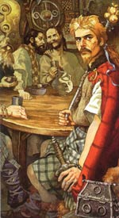

Конхобар Мак Несса, в ірландській міфології король Ольстера, син Фахтна Фахтнаха і Несс, красуні, яка, за однією з версій, зачала Конхобара від друїда Катбад напередодні весілля. Незабаром після весілля її чоловік помер, і за Нессі став доглядати її зведений брат і спадкоємець престолу Фергус Мак Рот. Несса зважилася вийти за нього заміж лише за умови, що він дозволить Конхобар правити Ольстером протягом року. Король погодився і навіть подарував юнакові свою зброю. Честолюбна і вольова королева навчила сина всьому, що необхідно великому правителю, і коли в домовлений термін Фергус Мак Рот повинен був знову зайняти трон, жителі Ольстера дружно відмовилися його визнати.
Король Конхобар був давно одружений, коли шалено закохався в Деирдр, дочка Ольстерського вождя. При народженні дівчинки друїд Катбад передбачив, що вона виросте красивою жінкою Ірландії і вийде заміж за короля, але принесе рідній землі нещастя. На той час, коли Деирдр виросла, Конхобар був уже старий. Дівчина з огидою відкинула його домагання і втекла з красивим молодим воїном Наойзе.
Але король не збирався відмовлятися від своєї любові. Конхобар скликав в королівську резиденцію Емайн Маху свою свиту, загін славних воїнів - знамениту Червону Гілка і організував переслідування і вбивство Наойзе, щоб одружитися на Деирдр. У розпачі вона покінчила з життям, кинувшись з мчащейся колісниці.
Конхобар був убитий з пращі чарівним каменем - це був знаменитий брейнбол, куля, зліплений Коналл Переможним з мізків убитого їм Лейнстерской короля. Снаряд засів в черепі Конхобара, і кілька років по тому, коли Конхобар Мак Несса впав в лють, "куля з мізків" вбив його.